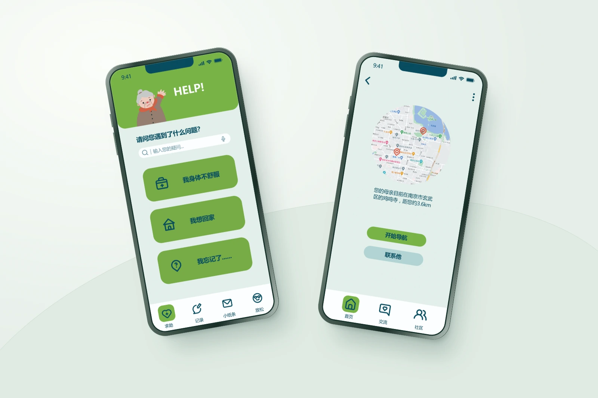
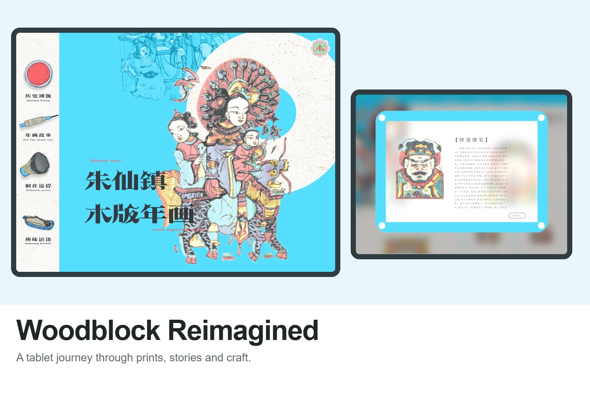
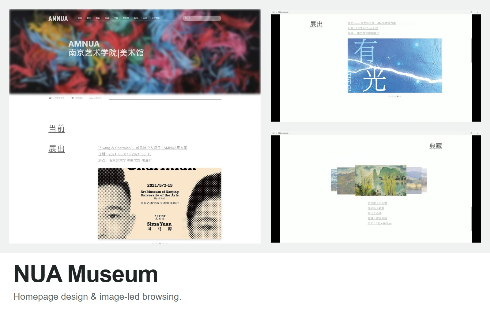
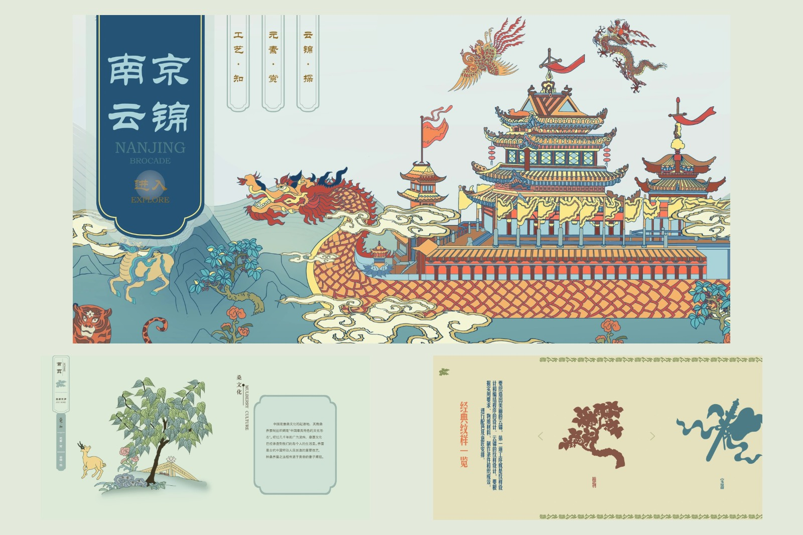
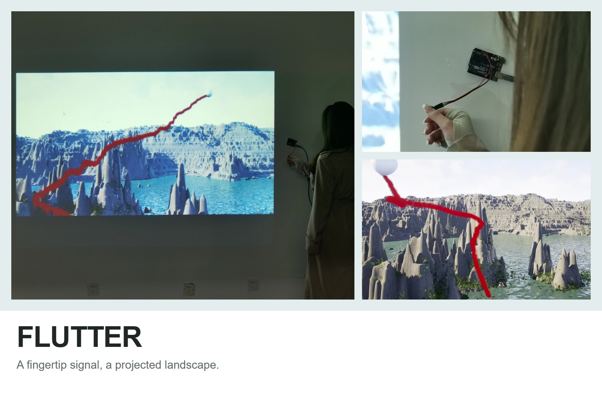

Manuscript in preparation
Generative AI and Accessibility
Across 240 papers, reported participation by disabled people is concentrated in evaluation, with less involvement in problem definition and design.Cover: AI-generated concept illustration.
Research studies, working prototypes and design explorations.
13 projects
Studies of AI accessibility and immersive experiences.
Manuscript in preparation
Across 240 papers, reported participation by disabled people is concentrated in evaluation, with less involvement in problem definition and design.Cover: AI-generated concept illustration.

Heritage · 2025 · Co-first author
Usefulness had the strongest direct association with intention to use VR. A mixed-methods study with 566 survey responses and 20 interviews. Cover: AI-generated concept illustration.
 Mobile AR prototypeRecorded interface
Mobile AR prototypeRecorded interface
Master's thesis · 2026
A mobile AR prototype and a study of 388 responses. Perceived authenticity was associated with usefulness and flow.
Web tools and interface concepts, with recorded interactions.

Independent web application
An interactive poster editor: draw a cut, reshape a vessel and explore two-ink compositions.
Try CUT / PRINT
Interface design concept
Everyday help, family contact and permission-aware sharing in a dementia-support interface concept. Device mockup using the original interface designs.

Tablet interface prototype
Explore Zhuxianzhen woodblock prints through history, image stories, craft steps and folk sayings.

Website redesign concept
An image-led museum homepage concept for browsing exhibitions, education and the collection.

Collaborative interface prototype
An illustrated exhibition interface linking Yunjin materials, weaving, motifs and a panoramic world.
Physical inputs connected to projected and animated responses.

Interactive installation
A handheld light reveals a moving mural through an infrared-controlled TouchDesigner installation.

Independent interactive installation
Two speculative textile futures, connected to cloth and dye-bottle interactions through Arduino and TouchDesigner.

Physical-computing prototype
A fingertip sensor connects bodily rhythm to a balloon and coloured trail in an Unreal Engine landscape.
Experiments in motion and exhibition space.
Try a project title, method or tool, or clear the filters to see everything.